MyGala
Three friends in MyGala's terracotta and gold, each with its own job. They move on their own (bobbing, blinking, sparkling) and stay still for visitors who turn motion off.


A happy bubble of bubbly in a terracotta party hat. Bubbly greets new hosts, gives tips while they set up their page, and keeps them company on pages that are still empty.

SleepingEmpty pages: "No RSVPs yet"A cheering party popper. Pop bursts into confetti when something good happens, and when something goes wrong, it's Pop who says sorry.

ReadyJust before: "Publish my page"
OopsErrors: "Something went wrong"A little firefly with a glowing golden lantern. Glo shows guests where to go, finds lost visitors, and shines on dark pages and night themes.

GlowingEveryday, and loading
Lost?The 404 page: "We can't find that page"
SleepingAfter the party, quiet pages